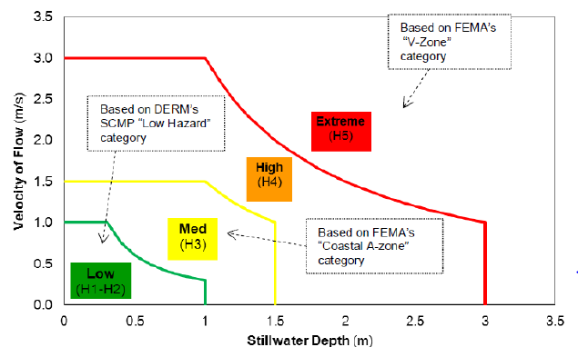
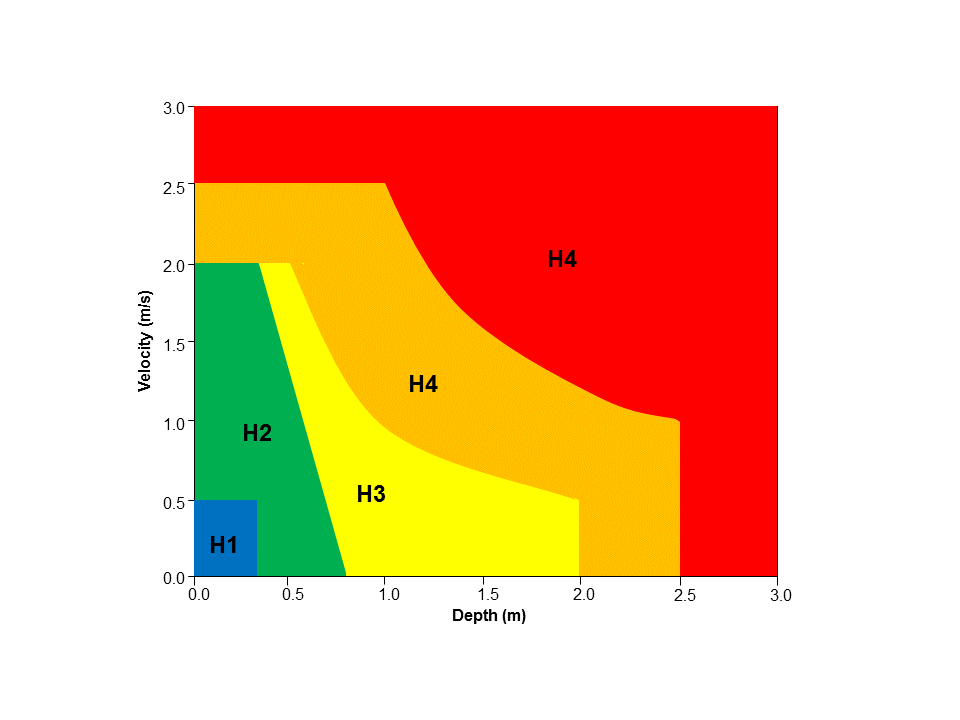
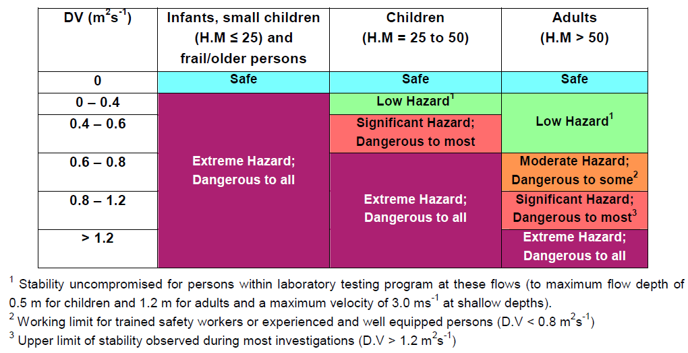
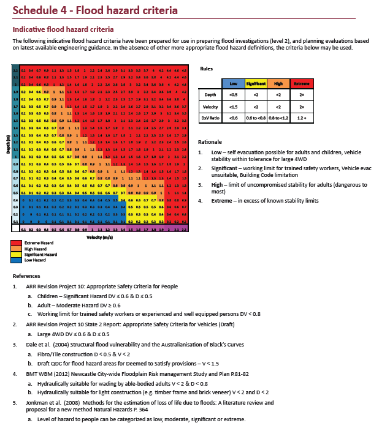

11.2 Map Outputs
TUFLOW has a range of commands that allows the user to control the formats, data types, frequency, sub-areas (output zones) or resolution (SGS high-resolution) of a simulation’s output. The options are highly flexible and can be customised to be different for different output formats and/or output zones.
For example, time-based map output may be produced using one format (e.g. XMDF), and the peak flood level surface for another output (e.g. TIF). Output over a township maybe at a higher output interval frequency than for the whole model so as to produce a higher quality animation of flooding through the township, or if using SGS, at a higher resolution (e.g. HRTIF).
The main commands to control map outputs are:
- Start Map Output and Map Output Interval: to control when and how frequently to write map output (Section 11.2.1).
- Map Output Format: to specify the format of the outputs to be written (Section 11.2.2).
- Map Output Data Types: to specify the data type, such as water level, stream power, etc. (Section 11.2.3).
For example, application of the above commands may look like:
11.2.1 Output Time Controls
To control when and how frequent outputs are written, time control commands are used. They can be set as a global setting or customised for each output format. A variety of formats can be output for a single simulation, the supported formats are discussed in Section 11.2.2.
To set default settings the followings commands can be used:
- Start Map Output: to control when to start writing outputs.
- Map Output Interval (s): to control the frequency of the output.
- End Map Output: to control when to stop writing outputs.
To customise the time control commands to be different to the default or global settings, the map output format acronym is included at the start of the command. For example, “
- <format> Start Map Output
- <format> Map Output Interval (s)
- <format> End Map Output
To apply the same setting to more than one format, the command needs to be repeated for each format. If a format is not customised the default setting or the setting applied to the whole of the model is used. The order of commands is important, ensure that commands defining the map output settings for all format types are read in prior to any commands specific to a certain format type. For example:
The following commands set a Map Output Interval of 120 seconds for the XMDF format and 3600 seconds for the TIF format:
Map Output Format == XMDF TIF
Map Output Interval == 120
TIF Map Output Interval == 3600 Swapping the order of the second and third command lines will set a Map Output Interval of 120 seconds for all output formats as the third command overwrites the TIF Map Output Interval command.
Map Output Format == XMDF TIF
TIF Map Output Interval == 3600
Map Output Interval == 120
Of note is that each output is tracked every timestep for its maximum if Maximums and Minimums is set to “ON” or “ON MAXIMUMS ONLY” (the default) to ensure that the peak result (water level, depth, hazard etc.), independent of the time it occurred during a simulation, is recorded.
11.2.2 Map Output Formats
TUFLOW offers a wide range of map output formats, all non-proprietary, to cater for a range of GIS and GUI software. There are no constraints over how many output formats a single simulation can produce. Different formats can have different output settings, and by using Output Zones different regions of the model can output in different formats.
Map output is offered in the following forms:
- Mesh Based: The output is based on a quadrilateral and/or triangular mesh of the 1D and 2D domains. This output is the closest reproduction of the hydraulic calculations, with minimal interpolation from the 1D and 2D computational points. These formats include: XMDF, DAT, TMO and WRB.
- Grid Based: The output is over a regular north-south grid in a similar manner to a raster DEM. The hydraulic output at each output grid cell is interpolated from the computational mesh using the Mesh Based output above. These formats include: TIF, GPKG, FLT, ASC, NC, TGO, WRR.
- High Resolution Grid Based: If using SGS, the retained sampled elevations can be used to produce high-resolution (HR) grid outputs. All supported Grid Based outputs can be high-resolution: HRTIF, HRGPKG, HRFLT, HRASC, HRNC, HRTGO, HRWRR.
- Combination Mesh and Grid: This format includes: WRC.
- GIS Based: GIS layers written as the simulation proceeds (similar to using the post-processing TUFLOW_to_GIS utility). The format is set by GIS Format.
The selection of formats is controlled by the TCF command Map Output Format. One or more formats may be specified for the whole model or for an Output Zone (refer to Section 11.2.5).
If no output format has been specified, the results are written by default using the XMDF format. The following sections describe the supported map output formats.
11.2.2.1 Mesh Based Formats
Mesh based map outputs use a mesh of quadrilaterals and/or triangles of the 2D cells and any 1D WLLs to manage and store the model results.
The recommended mesh format is the XMDF.
| Format | Description |
|---|---|
| XMDF |
The default mesh format. XMDF (.xmdf) was developed by Aquaveo as a faster and more space efficient replacement to the DAT format. The XMDF format complies with the HDF5 standard. The advantages of the XMDF format are:
For more information on the XMDF structure for standard and specialised outputs see the TUFLOW Wiki. The XMDF format is supported by most GUIs, the TUFLOW QGIS Viewer and the TUFLOW Utilities. For these reasons XMDF is the default. |
| DAT | The DAT (.dat) format is a legacy format now superseded by XMDF and no longer recommended for use. For more info on the DAT format see the 2018 TUFLOW Manual. |
| TMO |
The TMO (.tmo) output format is utilised by 12D Solutions for their TUFLOW GUI interface. If using 12D to display/view results this format will need to be specified using Map Output Format. This format contains 2D domain cell centred outputs from the model. Note, the Output Zones feature (Section 11.2.5) is currently not yet available for the TMO format. |
| WRB |
WaterRIDE by Worley Parsons is commercial software for visualising and post-processing hydraulic modelling results. TUFLOW supports the WRB (.wrb), WRC (.wrc) (Section 11.2.2.1.1) and WRR (.wrr) (Section 11.2.2.4) WaterRIDE formats. WaterRIDE triangulation format for visualising and post-processing hydraulic modelling results. Results are only output in the cell centred triangular mesh arrangement as WaterRIDE does not support quadrilateral elements in a mesh. One .wrb file is produced for each simulation that contains the model’s ground/bathymetric elevations, water levels, velocities (scalar and vector), and optionally the Z0 (VxD product) and one hazard category. The .wrb format is restricted to these data types, other data types specified using Map Output Data Types are ignored for WaterRIDE output. Also, WaterRIDE can only display a single hazard category (the first one is used if more than one is specified). If Z0 and/or a hazard category are not specified for WRB output, WaterRIDE can optionally post-process these hazard values noting that the maximum of these hazard values, and the actual values, may differ from those directly output from TUFLOW due to post-processing interpolation effects. Other data types such as depth are also post-processed by WaterRIDE (and may differ from those directly output from TUFLOW). If maximums are tracked (see Maximums and Minimums) these are also added to the .wrb file for the data types mentioned above. Note that if WaterRIDE is used to post-process maximums the values will be different to those provided by TUFLOW. TUFLOW tracks maximums every timestep, whilst WaterRIDE post-processes maximums using the values in the .wrb file, which only occur every Map Output Interval. |
| CC | A cell centred map output format. The output writes to NetCDF file format and uses the 2D domain’s cell size and orientation. This feature is only compatible with single 2D domain models and does not include any 1D output via WLLs. The CC option allows for rotated TUFLOW model grids to be output at the 2D cell size resolution without interpolation to a north-south aligned raster. The file format of the output is described on the TUFLOW Wiki. |
Additional time outputs are available using Time Output Cutoff Depths or Time Output Cutoff Hazards to output maps of the duration of inundation and the time of first inundation above specified depth(s) or VxD(s).
The options in the table below only apply to the XMDF format. Only one (or none) can be specified.
Note that the Map Output Format SMS HIGH RES option is a legacy feature no longer supported and is, and not included in the table below. For details on the SMS HIGH RES feature search the 2018 TUFLOW Manual.
| Format | Description |
|---|---|
| SMS | This is the default SMS option and outputs ground elevations and results at the cell corners only. |
| SMS TRIANGLES |
Outputs 2D cells as four triangles rather than as a quadrilateral if DAT and/or XMDF are specified. The triangles are constructed so that the 2D cell centre is a common vertex to all four triangles. This means that the mesh is entirely constructed of triangles (four triangles per 2D cell and any 1D WLL triangles). Note: For the formats that rely on this triangle only mesh (e.g. ASC, FLT, NC, T3, TGO, WRB, WRR), the SMS TRIANGLES option does not need to be invoked. Only specify SMS TRIANGLES if you require your XMDF or DAT output to be based on a triangle only mesh rather than the default mesh of quadrilaterals for 2D cells and triangles for 1D WLLs. See Section 11.2.2.1.1. |
11.2.2.1.1 Mesh Configurations
Quadrilateral and Triangle Mesh Option
The default mesh used by the XMDF format uses quadrilaterals (squares) for the 2D cells and triangles for representing any 1D WLLs as discussed in Section 11.2.4. Each 2D domain and the 1D WLL triangles are treated as separate meshes, although they will appear as one when viewing the .2dm file.
The advantage of this format is that the amount of data output is optimised keeping file sizes small with little loss of accuracy in translating results from the computational mesh.
Only the XMDF format supports the combination of quadrilaterals and triangles.
Triangular Mesh Option
Except for the XMDF format, all the other mesh-based formats use a triangular mesh to represent the computational 1D and 2D domains. The triangular mesh is also used by the grid-based formats (TIF, FLT, ASC, NC, TGO, WRR) to interpolate from the triangular mesh the values at the grids cells’ centres (this is the cell centres of the output grid, not the 2D domain grid cells).
To utilise this format using the XMDF format, specify SMS TRIANGLES anywhere in the arguments for the Map Output Format command.
The triangular mesh option incorporates output at the cell centres, so the exact water level calculated by TUFLOW at the 2D domain cell centres is used when translating results, thereby providing a slightly more representative surface of the hydraulic calculations. Each 2D cell is represented as four triangles with a common vertex at the cell centre, giving a higher resolution spatial representation than just using the 2D cell corners.
However, the number of nodes in the mesh for the 2D domains increases by 20% and the number of elements by a factor of 4, and the output file sizes will be larger and the viewing and processing times possibly slower. Any triangular elements from 1D WLLs are not affected and remain the same in either mesh arrangement.
2D Cell Corner Interpolation/Extrapolation
Irrespective of the mesh option being used, the Map Output Data Type values at the 2D cell corners need to be interpolated (or extrapolated if at the wet-dry interface). Two methods were developed that can be set using the command Map Output Corner Interpolation
For model results where the water has risen upwards (e.g. river flooding), the Method B or C approaches should cause no significant changes in results (i.e. fractions of a mm). Where the flow is downwards over steep slopes, some changes in results at cell corners will occur, but usually only slightly. However, maximum hazard values on very steep slopes may experience a more significant change.
11.2.2.2 Grid Based Formats
Grid-based formats output the results over a regular grid in similar formats to DEMs and other raster-based data. The output grid resolution and origin is not necessarily the same as the 2D hydraulic modelling grid, and will also use any 1D WLL triangulations to include map based output of 1D domains. Grid based formats are highly suited for use in GIS, and especially for handling output from very large models (e.g. GPU models).
The available grid formats are listed in Table 11.3. The output grid format is set with the Map Output Format command, for example:
Alternatively, instead of including a specific format (e.g. TIF or FLT) in the Map Output Format list, this can also be specified using the
The output grids are placed in a sub-folder called “grids”. For TUFLOW Classic the default output grid resolution is half the smallest 2D cell size (considering that multiple 2D domains may exist). For TUFLOW HPC the default is half the 2D cell size. For HPC models using Quadtree, the output resolution is the smallest 2D cell size. The resolution of the output grid can be controlled by the Grid Output Cell Size command. Only one output grid resolution is possible. If multiple commands exist, the last occurrence of the command will prevail. The origin of the output grid is rounded to the nearest cell size. This can be set to the exact model origin using the
The TUFLOW grid output formats (listed in Table 11.3) support all available Map Output Data Types (listed in Table 11.4 and Table 11.5). The minor exceptions are noted in Table 11.3.
Grids outputs store data on a grid by grid basis and in a north-south direction, and interpolation must occur to convert the data from the TUFLOW calculation points. The raster data is interpolated from the values at the cell corners and centres.
For example, the image below shows:
- A _grd_check file (black lines)
- A _zpt_check showing the TUFLOW calculation (ZC, ZU, ZV and ZH) points;
- An output water level TIF grid (underlying grey grid); and
- Orange dotted lines showing the triangulation between the cell corners and centres.
The raster data (grid centre indicated by red cross) obtains its value from the triangulation between A, B, and E.

To more closely align the grid output with the TUFLOW calculation points:
- Set the domain to have an Orientation Angle of zero, and
- Use the
Grid Output Origin == Model Origin command.
The <format> Map Output Interval can be set to zero as follows to trigger only outputting the maximums for those formats. For example:
All time outputs are supported by the grid map output formats. The grid file extensions are:
- _TDur_<cutoff> for duration of inundation;
- _TExc_<cutoff> for time <cutoff> is exceeded;
- _TMax_h for time of peak water level; and
- _TMax_V for time of peak velocity.
| Format | Description |
|---|---|
| TIF |
The GeoTIFF raster compressible format is supported from the 2023-03 Release and onwards and is the default format. A projection can be set for the output GeoTIFF rasters by using the TIF Projection command. Individual files are created for each output type, time, maximums, etc. TUFLOW supports several compression methods for GeoTIFF, see TIF Compression, the default is the “deflate” method. A compression predictor “horizontal differencing” is used to improve the compression ratio, see TIF Compression Predictor. TUFLOW will default to using all available CPU cores when writing GeoTIFF files which can speed up processing when using compression. This can be changed by specifying the number of threads using the command line argument “-nt[thread count]”. |
| FLT |
ESRI binary (float) version of the ASC format. The data is uncompressed. The file header containing the dimensions of the grid is output to a .hdr (text) file and contains the same header as for an .asc file. The remainder of the output, the 3D surface values, is written to a .flt file as a binary dump rather than as a text file. Advantages of this format are that it is very simple and is much faster to write and open than the ASC format. Main limitations are that file sizes are large, and a separate file needs to be written for every Map Output Data Type specified and for every output time (that can be a lot of files!). |
| GPKG |
The GeoPackage grid format is supported from the 2023-03 Release onwards. The format uses a tiled structure to make rendering and loading faster by enabling the ability to only process the required tiles. The tiled structure also makes pyramids (sometimes referred to as ‘overviews’) inherently available for the format. Individual files are created for each output type, time, maximums, etc. The GPKG raster outputs will be grouped if the Spatial Database command is set to “grouped” (the default). The GPKG raster format supports LZW compression of the data, see GPKG Compression. A compression predictor “horizontal differencing” is used to improve the compression ratio, see GPKG Compression Predictor. |
| ASC |
ESRI ASCII (.asc) uncompressed grid format, a long-established industry standard format often used for transferring 3D surfaces between GIS software. Advantages of this format are that it is very simple and can be viewed in a text editor. Limitations are that for large grids the file maybe slow to write, slow to open and work with, file sizes can be very large, and a separate file needs to be written for every Map Output Data Type specified and for every output time (that can be a lot of files!). |
| GRID | Outputs grid files in the default grid output (.tif) unless Grid Format is specified in the .tcf. |
| NC |
The NETCDF (Network Common Data Format) is a commonly used compressible format for storing modelling and scientific data. A single file is created that contains all output types, output times and static outputs (e.g. maximums). A number of NetCDF specific commands are supported as listed below. The TUFLOW Wiki page TUFLOW NetCDF Raster Format provides additional information.
|
| TGO | The TGO format is utilised by 12D Solutions for their TUFLOW interface. The output is a north-south aligned raster and includes outputs from multiple domains and water level lines. Unlike the mesh .tmo format, all Map Output Data Types are supported, and the resolution of the output grids can be set using the command Grid Output Cell Size. Individual files are created for each output type. As of the 2020-10 release the TGO velocity angle is in radians, previously this was degrees. |
| WRR | A WaterRIDE uncompressed format that contains the time varying grid output using a north-south aligned raster and includes outputs from multiple domains and 1D WLLs. All Map Output Data Types are supported, and the resolution of the output grids can be set using the command Grid Output Cell Size. A single file is created for all output types, times, etc. Due to no compression, file sizes can be very large. |
11.2.2.3 High-Resolution Grids
When using sub-grid sampling (SGS) the sampled elevations are retained, including topography modifiers such as breaklines. At the end of the geometry processing this allows a high-resolution grid to be written and used for high resolution map outputs. All grid formats in Table 11.3 are supported. Currently, high resolution raster outputs are only available for depth (d) and water level (h) output data types. By default, by turning on high-resolution outputs, a high-resolution DEM check file (_DEM_Z_HR) is also produced (which replaces the _DEM_Zmin check file).
To produce high-resolution output, add “HR” to the grid format. For example “HRTIF” or “HRFLT” to produce a high resolution TIF or FLT respectively. Note, the Map Output Interval will also have to be set, for example, “
The high resolution grid output uses the following approach:
- The water level at each HR raster output cell is interpolated from the computed 2D water levels.
- The depth is the difference between the interpolated water level and the terrain elevation interpolated from the surrounding SGS sampled elevations.
The regular grid output interpolates depth from cell centres/corners with a default output resolution of half the cell size. The difference between the regular and the HR grid output is illustrated in Figure 11.1.
Figure 11.1: Regular Grid Depth Output (Left) and HR Grid Depth Output (Right)
When modelling breaklines in TUFLOW, “thin” breaklines modify the cell face elevations but do not modify the cell storages. When outputting the high-resolution outputs, the user can set whether the cell face elevations are included using the .tcf command (the default is ON, to use face elevations):
The water level and depth interpolation approaches for the high resolution outputs can be altered depending on the type of model (e.g. hydrology inflows or direct rainfall) and specifically how TUFLOW outputs the high resolution results around thin breaklines. These output options are discussed on the TUFLOW Wiki HR Output page.
HR grid outputs are also compatible with the output zone functionality, see Section 11.2.5.
Models producing high-resolution outputs are provided in the Output Options Example Model Dataset on the TUFLOW Wiki.
11.2.2.4 Combined Format
Combination of a mesh and grid-based approach. The only available combined format is the WRC format. The WRC format produces a master (.wrc) file and one or more WRR and WRB files. The approach adopted by TUFLOW is as follows:
- Each 2D domain is output as a rotated WRR format grid with the cell size equal to the TUFLOW cell size. The WRR format is significantly faster than than the WRB format due to its grid-based formatting. The output values are the cell centre values for each 2D cell.
- Any 1D WLL triangulations are output as a separate WRB file.
- The WRC “master” file is output to the specified results folder, while the WRR and WRB files are written to a “waterRIDE” sub folder.
11.2.2.5 GIS Based Format
GIS based map outputs use the format specified by GIS Format to write out map output as a series of GIS layers. Gridded output format as GIS layers can be written directly from TUFLOW during the simulation by including “GIS” in the Map Output Format command. This offers a similar functionality to that using the TUFLOW_to_GIS utility via, for example, the –shp option. For scalar outputs, these are output as a point GIS layer with a separate file for each output time. For vector outputs, this can be either as a point or region GIS layer. For vector outputs, this can be either as a point or region GIS layer. A region GIS layer produces the same arrows as those generated by TUFLOW_to_GIS utility where each arrow is scaled according to the vector magnitude.
Specific commands to this output format are:
The commands above can be applied to all vector outputs or can be specific to the data type by prefixing with a “v”, “q” or “W”, for velocity, unit flow or wind respectively. The example below sets the scale factor to 1 for all outputs except unit flow, which has a smaller factor of 0.1.
11.2.3 Map Output Data Types
TUFLOW can output a wide range of output types in map format. Table 11.4 describes all the non-hazard map output types, while Table 11.5 contains all flood hazard category (Z) map output types. The map output types produced by a simulation are controlled using the .tcf command Map Output Data Types.
The map output types’ flags are listed in the first column of the tables and are used to denote the type(s) to be output. They can occur in any combination or order and are not case-sensitive. For example, to output water level, velocity and unit flow, enter the following line in the .tcf file:
Although optional, it is strongly recommended that spaces are used between each data type for clarity.
The output types are available in a wide range of Map Output Formats and can be varied for different formats (Section 11.2.2) and between output zones (Section 11.2.5). Not all Map Output Data Types are available for all Map Output Formats due to limitations or constraints of the type/format. The supported formats for each type are documented in Table 11.4 and Table 11.5.
It is possible to get different output types for different output formats, as discussed in Section 11.2.2. For example:
| Flag |
Map Output Data Type |
Description | Supported Formats |
|---|---|---|---|
| AP | Atmospheric Pressure |
Atmospheric pressure in hPa. Atmospheric Pressure is only available if using the Read GIS Cyclone or Read GIS Hurricane commands. Maximum and minimum output is not available. |
All formats excluding TMO, WRB and HR. |
| BSS | Bed Shear Stress |
Bed Shear Stress in N/m2 (or lbf/ft2 if using Metric Units: \[\tau_{bed} = \frac{\rho g V^2 n^2}{y^{\frac{1}{3}}} \hspace{3em} (N/m^2)\] The Bed Shear Stress map output can be misleading at very shallow depths as the BSS formula divides by the depth. The BSS and SP outputs are linearly reduced to zero once the depth is below a threshold (by default, 0.1m). This threshold can be changed using the .tcf command BSS Cutoff Depth. Note, prior to the 2017 release BSS output in Imperial Units were in Poundals per square foot (pdl/ft2). Minimum output is not available, but maximum output is. |
All formats excluding TMO, WRB and HR. |
| CI | Cumulative Infiltration |
The cumulative infiltration over the entire simulation in mm or inches (if using Note, the CI output is restricted to models for which the value is cumulative, specificially this means models that have:
When any of the three options (multiple vertical layers, horizontal movement or negative rainfall) are used, the water content in the layer is no longer a “cumulative value”. Maximum and minimum output is not applicable/available, as it is a cumulative output. |
All formats excluding TMO, WRB and HR. |
| Cr | Courant Number |
Classic Only. Courant number (2D domains only). Maximum and minimum output is not available. |
All formats excluding TMO, WRB and HR. |
| CWF | Cell Width Factor | No longer supported - previously available via the legacy SMS HIGH RES option. | N/A |
| d | Depth |
Water depths in m or ft (if using |
All formats excluding WRB. |
| dGW | Depth to Groundwater |
Depth to groundwater (from the ground surface) over time in metres or feet (if using If using multiple sub-surface layers in TUFLOW HPC (see Section 7.3.5.2 it is the distance from the ground surface to the groundwater level of the layer in question. Maximum and minimum output is not available. |
All formats excluding TMO, WRB and HR. |
| dt | Minimum Timestep |
HPC Only. The dt map output is a grid map output that displays the calculated minimum timestep at each grid cell. It does not necessarily align with the timestep adopted in the model (the timestep in the model could be less if the previous timesteps were smaller). This helps identify which cells in the model are controlling the model timestep. For more information see the TUFLOW Wiki HPC Model Review. Maximum and minimum output is not available. |
All formats excluding TMO, WRB and HR. |
| E | Energy |
Scalar data file containing the energy levels at the element nodes (cell corners). The energy levels are based on the interpolation of water levels and dynamic head (V2/2g) at the output location. As both the 1D and both 2D solutions use a staggered computational scheme, the interpolation of the water levels and/or velocities to the output location may occasionally cause an “increase” in energy to be apparent in the output, and energy output should be treated with caution. For 1D areas, this output should be treated with additional caution as it is derived from interpolation of water levels and approximations of the channel velocities across the WLLs, which can be problematic in 1D channels with high velocities. The energy output for 1D nodes is available as part of the plotting output (Section 15.2.1). Maximum energy levels is for when the maximum water level occurs (Note: This may cause undulations in the maximum energy due to variations in the time of the maximum water level). Minimum output is not available, but maximum output is. |
All formats excluding TMO, WRB and HR. |
| F | Froude Number |
Froude number output. Maximum and minimum output is not available. |
All formats excluding TMO, WRB and HR. |
| FLC | Form Loss Coefficient | No longer supported - previously available via the legacy SMS HIGH RES option. | N/A |
| GWd | Groundwater Depth |
Depth of water within each sub-surface layer(s) when layered interflow has been defined (see Section 7.3.5.2). Determined by dividing the cumulative infiltration by porosity. Reported in metres or feet (if using |
All formats excluding TMO, WRB and HR. |
| GWh | Groundwater Level |
Elevation of the groundwater surface (water table) for each sub-surface layer(s) when layered interflow has been defined (see Section 7.3.5.2). Reported in metres or feet (if using |
All formats excluding TMO, WRB and HR. |
| GWm | Groundwater Moisture |
Groundwater moisture output. Dimensionless number in the range of zero to one representing a “fraction full” for each sub-surface layer(s) when layered interflow has been defined (see Section 7.3.5.2). Maximum and minimum output is not available. |
All formats excluding TMO, WRB and HR. |
| GWq | Groundwater Unit Flow |
Groundwater unit flow (m2/s, flow per unit width) at the nodes (cell corners) of the sub-surface layer(s) when layered interflow has been defined (see Section 7.3.5.2). Reported in m2/hr or ft2/hr (if using |
All formats excluding TMO, WRB and HR. |
| GWv | Groundwater Velocity |
Groundwater flow velocity when layered interflow has been defined (see Section 7.3.5.2). The resulting groundwater velocity vector is calculated from the surrounding u and v-points. Reported in m/hr or ft/hr (if using |
All formats excluding TMO, WRB and HR. |
| h | Water Level |
Water level output. For the cell cornered results formats (see Section 11.2.2.1.1) the water levels are interpolated from the water levels calculated at the cell centres. Both maximum and minimum output is available. |
All formats. |
| IR | Infiltration Rate |
The infiltration rate in mm/hr or inches/hr (if using If using multiple sub-surface layers (see Section 7.3.5.2) the infiltration rate is reported for the first (top) layer only. Maximum and minimum output is not available. |
All formats excluding TMO, WRB and HR. |
| MB1 | Mass Balance |
TUFLOW Classic only (for HPC, see the ‘dt’ output). Measure of the convergence level of the solution. The measure is a cumulative value since the last output time, and is an effective way of identifying problem areas in a model that repeatedly have poor convergence and most likely mass error. Very useful for identifying problem areas within a model. This output does not include 1D output from WLLs. Maximum and minimum output is not available. |
All formats excluding TMO, WRB and HR. |
| MB2 | Mass Balance |
TUFLOW Classic only (for HPC, see the ‘dt’ output). Same as MB1 above but is accumulated over the entire simulation. This output does not include 1D output from WLLs. Maximum and minimum output is not available. |
All formats excluding TMO, WRB and HR. |
| n | Manning’s n |
Manning’s n values. The n values only vary over time for materials using the Manning’s n varying with depth feature. The n values at the cell corners in the _n.xmdf file are interpolated from the surrounding four cell mid-sides. Maximum and minimum output is not available. |
All formats excluding TMO, WRB and HR. |
| Nc | Shallow Wave Celerity Number |
HPC Only. The Shallow Wave Celerity Number. One of the three controls TUFLOW HPC uses to determine the maximum timestep to maintain stability. See the TUFLOW Wiki HPC Adaptive Timestepping for discussion on adaptive timestepping and the Nc number. Maximum and minimum output is not available. |
All formats excluding TMO, WRB and HR. |
| Nd | Diffusion Number |
HPC Only. The Diffusion Number. One of the three controls TUFLOW HPC uses to determine the maximum timestep to maintain stability. See the HPC Adaptive Timestepping Wiki Page for discussion on adaptive timestepping and the Nd number. Maximum and minimum output is not available. |
All formats excluding TMO, WRB and HR. |
| Nu | Courant Number |
HPC Only. The Courant Number. One of the three controls TUFLOW HPC uses to determine the maximum timestep to maintain stability. See the TUFLOW Wiki HPC Adaptive Timestepping for discussion on adaptive timestepping and the Nu number. Maximum and minimum output is not available. |
All formats excluding TMO, WRB and HR. |
| q | Vector Unit Flow |
Unit flow (m2/s, flow per unit width) at the nodes (cell corners). The resulting flow vector is calculated from the surrounding u and v-point velocities and the depth. Unit flow may also be used as a measure of flood hazard (i.e. velocity by depth or VxD). Note: The maximum unit flow is not tracked for the q output, the Z0 scalar hazard value option can be used, as this output is tracked at each timestep. Maximum and minimum output is not available. |
All formats excluding TMO, WRB and HR. |
| R | Flow Regime |
TUFLOW Classic only. Flow regime. The output value is 0 (zero) for normal (sub-critical flow with momentum); greater than 1 for upstream controlled friction flow (e.g. supercritical flow); ‑1.5 for broad-crested weir flow; and ‑1 for flow through a flow constriction when the deck is submerged. No maximum and minimum output is available at this stage. The flow regime at the cell corners and centre is a weighted average (using unit flow) of the flow regimes at the four surrounding cell mid-sides, and where there’s different flow regimes at any of the four cell faces the R value can be misleading due to the averaging. Maximum and minimum output is not available. |
All formats excluding TMO, WRB and HR. |
| RC | Route Category |
TUFLOW Classic only. The route category output over time for evacuation routes. The definition and number of categories is based on the values specified within the Cut_Off_Values attribute of the 2d_zshr GIS layer (see Section 11.4.2). The RC values are output as an integer representing the closure category specified by the user. The maximum RC category value is tracked every timestep and output (if tracking maximums is switched on, which is the default). Minimum output is not available. |
All formats excluding TMO, WRB and HR. |
| RFC | Cumulative Rainfall |
The cumulative rainfall in mm or inches over time when direct rainfall has been applied to the model (refer to Section 8.4.3). See also the RFR (rainfall rate) map output type below. Both the RFC and RFR outputs (see next item) are inclusive of any boundary adjustments (e.g. in the boundary database) and rainfall losses applied in the materials file. Soil infiltration is applied once the rainfall has been applied to the cells, so this is not accounted for in the rainfall outputs, see also CI (cumulative infiltration) and IR (infiltration rate) output types. Maximum and minimum output is not applicable/available, as it is a cumulative output. |
All formats excluding TMO, WRB and HR. |
| RFML | Material Based Rainfall Loss |
The output contains the total rainfall losses applied due the initial and continuing rainfall losses specified in the Read Materials File (.tmf or .csv) file. The RFML option can be used to track the rainfall based material losses that have been applied spatially. The RFC and RFR map output data types can be used to output the cumulative rainfall and rainfall rate. Maximum and minimum output is not applicable/available, as it is a cumulative output. |
All formats excluding TMO, WRB and HR. |
| RFR | Rainfall Rate |
The rainfall rate in mm/hr or inches/hr (if using |
All formats excluding TMO, WRB and HR. |
| SP | Stream Power |
Stream Power as given by the equation below where τbed is bed shear stress (see BSS above) and V is velocity. \[Stream Power = |V|\tau_{bed} \hspace{3em} (W/m^2)\] The Stream Power map output can be misleading at very shallow depths as the BSS formula divides by the depth. The BSS and SP outputs are linearly reduced to zero once the depth is below a threshold (by default, 0.1m). This threshold can be changed using the .tcf command BSS Cutoff Depth. Prior to the 2017 release SP output in Inperial Units were in Poundals per square foot (pdl/ft2). From the 2017 release onwards, if using |
All formats excluding TMO, WRB and HR. |
| SS | Sink / Source Flow |
The net source/sink inflows. Note the flow rate for a cell is shown at the ZH point (top right of the cell). Maximum and minimum output is not available. |
All formats excluding TMO, WRB and HR. |
| t | Viscosity Coeff |
Eddy viscosity coefficient. This is useful for checking the Smagorinsky coefficient values. Maximum and minimum output is not available. |
All formats excluding TMO, WRB and HR. |
| tau | Shear stress |
This output contains the shear stress values applied via the external stress file (.tesf). The output values are in Newtons per square metre (N/m2) by default, or and pound-force per square foot (lbf/ft2) if using |
All formats excluding TMO, WRB and HR. |
| V | Vector Velocity |
Flow velocity. The resulting velocity vector is calculated from the surrounding u and v-points. Note: The maximum and minimum velocities are tracked over time, however, be careful interpreting maximum velocities displayed as vectors as the flow patterns may appear to be opposing each other - this is due to the maximum velocities not all occuring at the same instant in time. By default the maximum velocities are tracked over 0.1m depth, below this depth the velocity at maximum water level is used. See the Maximum Velocity Cutoff Depth command for more information. Both maximum and minimum output is available. |
All formats excluding HR. |
| WI10 | Wind Vector |
Wind Vector output in m/s at a height of 10m. Available when a cyclone/hurricane boundary is used, see Section 8.6. Maximum and minimum output is not available. |
All formats excluding TMO, WRB and HR. |
| ZH | Bathymetry |
Elevations at the cell corners (ZH points). This information is already contained in the .2dm file, however, this option is useful if the model’s bathymetry varies over time because of variable geometry (2d_vzsh or VG boundaries) or for morphological modelling. This output is very useful if you are comparing two or more runs that have different topography (e.g. before and after scenarios), and you wish to easily view or compare the topography for each scenario. If the topography in the model does not change over time (i.e. no variable Z shapes or morphological changes), for the default .xmdf output format the ZH Zpt values are output once, rather than every timestep, thereby not consuming disk space unnecessarily. The ZH map output will appear under a XMDF folder “Fixed”. This feature is only available if using the XMDF format, for other output formats, the bathymetry will be output at each output interval. Maximum and minimum output is not available. |
All formats excluding TMO, WRB and HR. |
11.2.3.1 Hazard Data Types
Table 11.5 presents the hazard category outputs. Of note is that each hazard is tracked every timestep for its maximum if Maximums and Minimums is set to “ON” or “ON MAXIMUMS ONLY” (the default) to ensure that the peak hazard category is recorded during the simulation. Up to ten (10) different hazard categories per simulation can be specified for map output. Grid map output hazard categories are output as integer grids (i.e. values are rounded to the nearest integer when a grid output cell centre is located at a change in category) when using Map Output Data Types except for output Z0, ZUK0 and ZUK2, which are output as real numbers.
Users have the option to customise hazard outputs based on a .csv file input using the “ZUD1” hazard type. This feature allows users to define a number of depth, velocity and depth-velocity product thresholds to create custom hazard categories. Like other hazards these are assessed at each computational timestep and the maximum is tracked every timestep. To specify a user defined hazard, add output type “ZUD1” in the “Map Output Data Types” command, e.g.:
The thresholds are defined through reading a .csv file using the following command:
The csv file should contain three (3) columns defining the thresholds for depth, velocity, and depth-velocity product respectively. The example below produces the same output as for “ZNZ1” described in Table 11.5.

Figure 11.2: Example Hazard File for User Defined Hazard
- Category 1: D < 0.1. Note: the velocity, and depth-velocity product thresholds are effectively not applied by using a large threshold value such as 99999.
- Category 2: D < 0.5 and V < 1.0. Note: the depth-velocity product threshold is effectively not applied by using the large threshold value of 99999.
- Category 3: D < 1.0 and V < 2.0 and D*V < 1.0
- Category 4: Otherwise
- Dry points are assigned Category 0.
A maximum of 10 categories can be specified by the .csv file, but just one User Defined Hazard is currently allowed per simulation. This functionality is compatible with both TUFLOW Classic and HPC solvers.
Please email support@tuflow.com if you would like to code a unique hazard output that is currently not included as an output type option or possible using the user defined hazard type (ZUD1).
| Flag | Supported Formats | Description |
|---|---|---|
| Z0 | All formats | Velocity x Depth product |
| Z1 | All formats |
Flood hazard category based on the Australian NSW Floodplain Management Manual (NSW Goverment, 2005b). The output is an integer number from 1 to 3 as follows and as illustrated in the figure below.

|
| Z2 | All formats |
V > 2.0 m/s: Category 5 (Extreme Hazard) 
|
| Z3 | All formats |
V > 2.4 m/s: Category 7 (Extreme Hazard) |
| Z4 | All formats |
Flood hazard mapping approach based on the Australian Guidelines (CSIRO, 2000) using the following logic:

|
| Z7 | All formats |
Based on Figure L1 of the NSW Floodplain Risk Development Manual (NSW Goverment, 2005b), using the following logic:
|
| Z9 | All formats |
Storm tide hazard mapping approach based on the storm tide hydraulic hazard categorisation developed for Moreton Bay Regional Council (GHD, 2012), where:
 The hazard categories are:
|
| ZAEM1 | All formats |
Flood hazard category as outlined by Australian Emergency Management Institute in 2017 (Australian Emergency Management Institute, 2017), where:
The hazard categories are:
|
| ZGC1 | All formats |
Flood Intensity output used by Gold Coast City Council (Australia). The logic applied is as follows:
|
| ZMBRC | All formats |
Flood hazard output used by Moreton Bay Regional Council (Australia) (MBRC, 2015), where:
 The hazard categories are:
|
| ZMW1 | All formats | No longer recommended by Melbourne Water. For details on this hazard category, see the 2018 TUFLOW Manual. |
| ZMW2 | All formats | No longer recommended by Melbourne Water. For details on this hazard category, see the 2018 TUFLOW Manual. |
| ZMW3 | All formats |
Based on Melbourne Water (Australia) FM&M Technical Specifications (Melbourne Water, 2016) to quantify Safety Risk in Roads. The logic used is as follows:
|
| ZNZ1 | All formats |
The flood hazard category based on the Hamilton City Council (New Zealand) Flood Hazard Report (Hamilton City Council, 2012). The categories are defined as:
|
| ZNZ2 | All formats |
Hazard category used by Auckland Council, New Zealand.
|
| ZPA | All formats |
People Hazard category “Hazard to Adults” based on the Australian Rainfall and Runoff (ARR) Project 10 Stage One Report (Cox et al., 2010). The values within the ZPA output are:
It is possible to specify cut-off depth/s representing when the Safe category applies by using the .tcf command ZP Hazard Cutoff Depth. Up to three values can be defined, which are the cut-off depths for ZPA, ZPC and ZPI respectively. The relevant tables and figures are reproduced below: 
|
| ZPC | All formats | People Hazard category “Hazard to Children” based on the ARR Project 10 Stage One Report (Cox et al., 2010). Refer to the description of output values for ZPA. |
| ZPI | All formats | People Hazard category “Hazard to Infants and frail/elderly People” based on the ARR Project 10 Stage One Report (Cox et al., 2010). Refer to the description of output values for ZPA. |
| ZPMH | All formats |
The flood hazard category based on the Port Macquarie-Hastings Council Flood Policy (Port Macquarie-Hastings Council, 2018). The logic used is as follows:
|
| ZQRA | All formats |
Hazard categories for the Queensland Reconstruction Authority (Queensland Reconstruction Authority, 2012).  |
| ZTMR | All formats |
Hazard category for the Queensland Department of Transport and Main Roads. Areas of a model with the Material ID set to a value of 100 (roads) will be tested for their submergence /closure status:
|
| ZUD1 | All formats |
Customisable hazard output based on a .csv file input read in using the Read Hazard File command. This feature allows users to define a number of depth, velocity and depth-velocity product thresholds to create custom hazard categories. The csv file should contain three (3) columns defining the thresholds for depth, velocity, and depth-velocity product respectively. The example below produces the same output as for “ZNZ1”:
|
| ZUK0 | All formats | The (real) value of the UK Hazard formula based on Environment Agency (2006) (see UK Hazard Formula, UK Hazard Land Use and UK Hazard Debris Factor). |
| ZUK1 | All formats |
The UK Hazard category (integer) based on Environment Agency (2006) (see UK Hazard Formula, UK Hazard Land Use and UK Hazard Debris Factor). ZUK1 outputs a .xmdf file containing an integer, as per:
|
| ZUK2 | All formats |
The (real) value of the UK Hazard formula based on UK FD2320 Technical Report (Environment Agency, 2008). \[Flood Hazard Rating = ((v+0.5)\:*\:D) + DF\] Where:v = velocity (m/s) D = depth (m) DF = debris factor |
| ZUK3 | All formats |
The UK Hazard category (integer) based on UK FD2320 Technical Report (Environment Agency, 2008). The flood hazard rating is calculated using the following equation: \[HR = d × (v + n) + DF\] Where: Based on this rating, flood hazard categories are classified as follows:

|

11.2.4 1D Map Outputs
1D domain results can be output in combination with 2D domain(s) by using the 1d_wll GIS layer and the Read GIS WLL 1D command. 1d_wll GIS layer(s) are used to define and control the 1D map output. The layer(s) contain lines (called Water Level Lines or WLLs) that cross or snap to 1D channels and/or nodes. A WLL is essentially a line of horizontal water level, and should be digitised on this basis (i.e. perpendicular to the flow direction).
The direction of WLLs is important. They must be digitised from left to right looking in the positive direction of the digitised channel.
When viewing the results, if the 1D WLLs and 2D domains overlap, the 1D results are displayed on top of the 2D results. However, depending on the viewing platform, when observing the scalar and vector magnitudes as the cursor is moved around, the 2D values maybe given precedence over the 1D where the overlap occurs.
Two WLL options are available. The preferred method can be specified by using the command WLL Approach. Of the two options, Method A and Method B, Method B allows more advanced and accurate mapping of 1D results in map formats and is the default and recommended method, and that described below. For documentation on Method A, refer to the TUFLOW 2010 Manual.
It should be noted that water level lines do NOT change the 1D hydraulic computations, they are purely used in order to display the 1D results in plan (2D) formats.
11.2.4.1 Water Level Lines
Ground elevations and optionally material (Manning’s n) values can be assigned to points along a WLL. A more accurate representation of 1D domain velocity and flood hazard can be mapped using this approach. The velocity at a point on the WLL is estimated by carrying out a parallel channel analysis along the WLL using the flow in the channel the WLL is associated with as explained further below.
The parallel channel analysis assumes the water surface slope is that of the associated channel, and the water level at the WLL is linearly interpolated between the upstream and downstream nodes based on the digitised channel length.
WLLs can have any number of vertices. The association of WLLs to channels and nodes is as follows:
- At the channel ends, to lock in the water level at a node, use a 3 vertex line with the middle vertex snapped to the 1D node. If you use a 3 vertex line across a channel, the channel “thalweg” is taken at the middle vertex, otherwise, for 2 vertex lines the mid-point of the WLL line is used.
- If a WLL crosses two or more channels, the channel closest to the middle vertex (3 point line) or half-way point (2 point line) is used.
- If a WLL middle vertex snaps to a node with two or more channels on the upstream side, the channel that is closest in angle to the WLL’s perpendicular (based on the WLL’s two end points) is used.
- For 4 or more vertices, one of the middle vertices (i.e. not an end vertex) must snap to a vertex on the channel line.
There is one 1d_wll attribute required as described in 11.6. The attribute, Dist_for_Add_Points, is the minimum distance in metres along which to generate points for that WLL. If Dist_for_Add_Points is zero, only the vertices along the WLL are generated.
Estimates of the elevation, depth, velocity and other hydraulic outputs from the parallel channel analysis are produced at each WLL point including any automatically added ones. The user can subsequently assign elevations and materials to each point to improve the topographic representation if so desired (see Section 11.2.4.2).
An automatically generated triangulation (TIN) of the WLL points is used to display the outputs in map based formats.
| No | Default GIS Attribute Name | Description | Type |
|---|---|---|---|
| 1 | Dist_for_Add_Points |
The minimum distance interval along the WLL to generate elevation and material sampling points (WLL Points). These points form the corners of the triangulation. If set to zero, no additional points are generated (i.e. only the existing vertices along the WLL are used). |
Float |
Use the 1D command Read GIS WLL to specify the 1d_wll layer and automatically create 1D map output for TUFLOW 1D domains. For Flood Modeller or XPSWMM linked TUFLOW models, use Read GIS ISIS WLL or Read GIS XP WLL in the .tcf file to read the 1d_wll layer(s). The Flood Modeller units or XPSWMM links will also need to be built into a GIS layer and read using Read GIS ISIS Network or Read GIS XP Network from the .tcf file.
Several 1d_wll layers can be specified covering different sections of the 1D domain(s) if required. The TIN of triangular elements is created from the WLL points and included in the .2dm mesh file that can be viewed using the QGIS TUFLOW Viewer or in SMS to check they have been created correctly. In particular, look for overlapping or strange triangulations that arise from WLLs not being digitised correctly.
The default approach uses the processed cross-section data (height–width data) from the channel for setting elevations at each WLL point. For Flood Modeller and XPSWMM, these data are automatically fed through to TUFLOW and is based on the cross-section information entered into the Flood Modeller/XPSWMM model.
If a WLL is snapped to a node, the processed data used for setting any bed elevations is from the higher channel unless it is a bridge in which case it uses the bridge processed data.
11.2.4.2 Water Level Line Points
If Write Check Files in the .tcf file is specified, two GIS check layers are created from the WLLs. These are labelled 1d_WLLo and 1d_WLLp. 1d_WLLo (Water Level Line Objects) reproduces the WLLs with attributes containing the channel and node the WLL is allocated to for cross-checking purposes.
1d_WLLp layers (Water Level Line Points) contain all of the elevation points generated based on the Dist_for_Add_Points attribute. This layer can then be used to allocate elevations (first attribute) to each point from a DEM (in the same manner that 2D Zpts can be assigned elevations).
A second attribute, RR, contains the relative resistance of each point (which will have a value of 1 when first generated). The RR attribute can be replaced by the integer material value at each point by using GIS to assign values from material polygons. The material value must exist in the .tmf file or a materials.csv file (see Read Materials File).
The attributes of a 1d_WLLp layer created by Write Check Files and used in Read GIS WLL Points, Read GIS ISIS WLL Points or Read GIS XP WLL Points are listed in Table 11.7.
The parallel channel analysis carried out for each WLL in future simulations will then use the WLL point data to estimate velocities and other outputs across the WLL instead of using the default approach of using processed hydraulic data as previously described. Note, the WLLs do NOT change the 1D hydraulic computations, they are purely used in order to display the 1D results in plan (2D) formats.
For Flood Modeller and XP-SWMM, the layers are essentially the same, but are named using xWLLo and xWLLp.
Note: If using Read GIS WLL Points or Read GIS X1D WLL Points, this layer must be a copy of the 1d_WLLp layer produced by Write Check Files. Points from this layer can be deleted, but not added. At deleted points, the default of estimating an elevation from the channel’s processed data is used. If the 1d_WLL layer is modified or any of the Dist_for_Add_Points attribute values changed, the 1d_WLLp layer needs to be regenerated and repopulated again.
For culvert channels (R and C channel type), only the end and mid vertices are used along the WLL, and the elevations are set to the culvert invert irrespective of the number of points along the WLL or the Dist_for_Add_Points value.
| No | Default GIS Attribute Name | Description | Type |
|---|---|---|---|
| 1 | Z | Ground elevation of the point. Automatically generated from the channel cross-section processed data or updated based on a point inspection of a DEM or other approach. | Float |
| 2 | RR or Material |
In the 1d_WLLp check file, the relative resistance of the point. A value of 1 is assigned if the elevation was estimated from the channel’s processed data. If the elevation was provided through a point using Read GIS WLL Points, RR is the material Manning’s n value divided by the channel’s n value. In a 1d_WLLp layer being used in Read GIS WLL Points or Read GIS X1D WLL Points, this column should either be set to an integer material value (normally sourced from a GIS layer of material polygons) – the material value must exist in the .tmf file (see Read Materials File). |
Float |
Elevation values along WLLs for bridge channels are always based on the processed data (i.e. any WLLp Z values are overridden) to ensure that the bridge deck underside is correctly represented. This has benefits when using the post-processing utility TUFLOW_to_GIS.exe (see Section 17.2) when extracting obverts of structures for longitudinal profiles.
A useful tip at a junction of 1D channels is to use a connector for any side channels (Type = “X” – see Section 5.8.3). Separate WLLs can then be allocated to the side channel and main channel removing the confusion that sometimes occurs in generating the triangulation between WLLs at junctions.
11.2.4.3 Adding Triangles into the 1d_WLL Layer
When using Method B, triangular regions can also be included in the 1d_WLL layer (as a separate region or polygon layer if using the .gpkg or .shp formats). The triangles are inserted into the WLL triangulation. This is particularly useful at junctions or between parallel channels to enhance the WLL TIN by facilitating a smooth transition of the water level surface at, for example, junctions or across meanders to infill areas and avoid steps in the output surfaces.
The triangles must snap to the ends of WLL line objects. In the example below, the WLLs are shown in red and the triangles are shown as yellow. These are connected (snapped) to the ends of the WLLs. The map output surfaces will interpolate over the triangle based on the hydraulic output values at the snapped WLLs.
If the region object is not correctly snapped an ERROR 1311 message occurs, pointing to the vertex on the triangle that is not snapped.

Figure 11.3: Adding Triangles into 1d_WLL Layer to Infill Areas
11.2.5 Output Zones
Output Zones are a powerful feature that allows users to generate map and check file outputs for sub-regions of a model. The region is defined using a polygon feature using the 2d_oz_empty template file. No attributes are associated with the polygon. One polygon per output zone and GIS layer is recommended. Note, multiple polygons within a single layer are not supported.
Different Output Zones can have different output formats, start/end times, frequency of output, and output data types. Any number of Output Zones can be defined for a model, and all, a selection of, or none of the Output Zones can be activated when the model is run.
Output zones are very useful, particularly for large models, where higher frequency map output is required for a portion of a model, for example to create an animation for an urban region using a shorter map output interval. Another useful purpose is to create an Output Zone for a problematic section of model that requires closer examination, by generating output on a fine time interval during the period in question. Another benefit is simply reducing the size of the output files by only outputting where information is required, and disabling the output for the whole model using Map Output Entire Model
Models using output zones are provided in the Output Options Example Model Dataset on the TUFLOW Wiki.
Note: the Model Output Zones command is used to select which Output Zones are to be used (activated). If this command is omitted, no output from the Output Zones is written. Separate multiple Output Zones using a “|” (vertical bar or pipe character). For example, to output from zones ZoneA and ZoneC specify:
If there are numerous Output Zones, it is recommended that the definitions are placed in one or more separate files, and use the Read File command to reference these file(s). This will keep the size of the .tcf file to a minimum. This, however, is not a requirement.
Each Output Zone is defined using a definition block as follows:
…..
The following commands can be used within an Output Zone definition. With the exception of Read GIS Output Zone, all commands are optional. The optional commands can be used to change the default setting or the setting applied outside the Output Zone definitions.
Read GIS Output Zone
Map Output Format
Start Map Output
End Map Output
Map Output Interval
Map Output Data Types
Output Folder
Maximums and Minimums
Maximums and Minimums Only for Grid
Write Check Files
The Read GIS Output Zone reads a GIS layer containing one or more polygons that define the regions to be output. The attributes of the layer are not used.
Note: If one of the commands above is not specified within the Output Zone’s definition, the latest setting of that command prior to the Output Zone’s definition, or the global default if the command has not been used prior to that location in the .tcf file, will be used. If, for example, all output is to be in the .xmdf format, only specify Map Output Format == XMDF once and prior to any Output Zone definitions.
Map Output Entire Model can be used outside an Output Zone definition block to turn on or off map output for the entire model (the default is ON). If set to OFF only map output for any Output Zones is written. Map output commands that occur outside Output Zone definitions apply to the entire model output.
Example: Defining an Output Zone
The example below defines Output Zone “ZoneA”. In the example, a DEM_Z check grid will be the only check layer written for the Output Zone, and Grid, WRB and XMDF outputs will be produced. The Grid output will consist of water level (h) and VxD (Z0) results, starting at time 0.5 hours and ending at 4 hours at an interval of 0.5 hours. The WRB and XMDF output files will contain water levels (h), velocities (V) and the ZMBRC hazard categories starting at the simulation beginning and finishing at 6 hours at an interval of 6 minutes.
11.2.6 Gauge Level Output
The 2d_glo GIS layer uses the .tcf command Read GIS GLO and writes map-based output data when the water level at the gauge reaches user defined levels.
Note: Map output based on reaching gauge levels replaces the conventional approach of using a Start Map Output time and a Map Output Interval.
The 2d_glo GIS layer is used to define the location of the gauge within the modelled extent. The gauge is digitised as a point object within a 2d_glo layer with the attributes as described in Table 11.8 and referenced within the .tcf using the command Read GIS GLO.
For TUFLOW Classic only, the water level at the gauge location is tracked by TUFLOW throughout the simulation and output to the console window (see Section 14.1) preceded by the letters “GL”.
When the water level reaches a user specified value, the map output results at that simulation time will be written. The results are useful for mapping the predicted area of inundation for specified gauge heights. The range of water levels at the gauge for which the results are written may be defined using one of two methods:
- By referencing a .csv file within the 2d_glo GIS layer using the first attribute. The .csv file contains a single column of levels, and comment lines are allowed using the “!” or “#” character. If a .csv file is specified in the first attribute, the remaining attributes are not used, but dummy or empty values for these attributes must exist.
- By populating the remaining attributes of the 2d_glo GIS layer as described below.
When using the attributes of the 2d_glo GIS layer to define the gauge heights, the map output results are first written when the water level at the gauge reaches the specified “Bottom_elevation”. Subsequent results are written as the water level at the gauge rises based on the value of the “increment” attribute. The map output ceases once the water level at the gauge reaches the “Top_elevation”.
For example, if the 2d_glo GIS layer has been defined as shown below, map output results will be written when the water level at the gauge reaches 41m, 41.5m, 42m, 42.5m and 43m.

Only one gauge location may be specified per model simulation. If more than one object exists within the 2d_glo layer, the gauge that is monitored by TUFLOW will be the last digitised point object. Similarly, if the Read GIS GLO command is used more than once, only the last occurrence of the command will be used.
Models using a gauge location (2d_glo) are provided in the Output Options Example Model Dataset on the TUFLOW Wiki.
| No | Default GIS Attribute Name | Description | Type |
|---|---|---|---|
| 1 | Datafile |
Filename (and relative or full path if needed) of the file containing the gauge levels to trigger map output. Must be a comma or space delimited text file such as a .csv file. Only the first column is used, and this column must contain the gauge levels. Comment lines using a leading “!” or “#” can be used at any point within the file. If this attribute is blank, the following three attributes are used to define the gauge levels to trigger map output. If this attribute is not blank, the following three attributes are not used, but they must exist and can simply be populated with empty or default values. |
Char (254) |
| 2 | Bottom_Elevation | The water level in m above datum at the gauge at which the writing of map output results will commence. | Float |
| 3 | Top_Elevation | The water level in m above datum at the gauge at which writing of the map output results will cease. | Float |
| 4 | Increment | The water level increments in metres between the Bottom_Elevation and Top_Elevation at which the map output results will be written. | Float |